Para equipos que operan SUSE Harvester HCI
Una consola moderna para todos tus clústeres de Harvester
harvester-ops reúne todos los clústeres en una sola interfaz, convierte las operaciones largas en un único gesto registrado y mantiene un historial de todo lo que ocurre, desde tu consola o desde cualquier otro lugar.
Código abierto. Listo para airgap. Cinco idiomas. v1.86.0
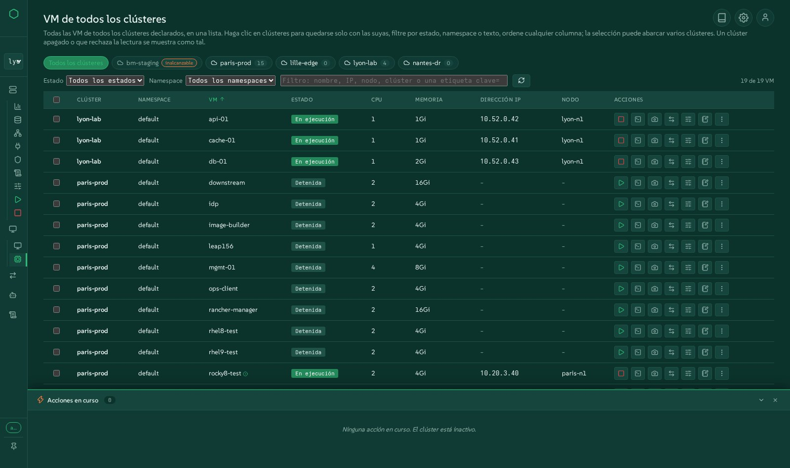
Todos los clústeres, una sola interfaz
Declara tantos clústeres de Harvester como gestiones. Cambia con un clic, lista todas las VM de todos los clústeres en una sola tabla, y ve al instante qué clúster está apagado o te rechaza, sin que los demás esperen.
Automatización simplificada
Apagado y arranque ordenados, actualizaciones, migraciones en caliente desde VMware, clústeres de Kubernetes, instalaciones bare-metal, Terraform: las operaciones largas se convierten en un solo gesto, con los mismos scripts detrás del botón y de la línea de comandos.
Cada evento registrado
Cada acción se ejecuta como un trabajo registrado con pasos en vivo, registros e historial. Los cambios realizados fuera de la consola, en Harvester, kubectl o Rancher, también aparecen.
Vela funcionar, en tu navegador
La demo es la interfaz real de esta versión, ejecutándose sobre clústeres simulados: cinco clústeres, VM para iniciar y detener, migraciones de VMware en curso, un panel de acciones que se mueve. Cada gesto funciona y nada se modifica.
Todo lo que hace harvester-ops
Agrupado como los operadores piensan su trabajo. Cada familia enlaza con la pantalla de la demo donde puedes probarla.
Todos tus clústeres en un solo lugar
Una única consola para una flota de clústeres de Harvester, físicos o anidados, cercanos o remotos.
- Declara clústeres desde la interfaz o el archivo de configuración; cambiar de clúster cambia de verdad cada vista.
- Todas las VM de los clústeres: cada VM de cada clúster en una sola tabla, filtrada por clúster, estado, namespace o texto, ordenada por cualquier columna, con inicio, detención, reinicio, migración y el menú de acciones completo sobre una selección que abarca varios clústeres.
- Los clústeres apagados o inaccesibles se señalan como tales, al instante, en lugar de congelar la página.
- Migraciones de todos los clústeres en una sola tabla o en una línea de tiempo compartida.
- Notas sobre clústeres, nodos y VM, conservadas por la consola.
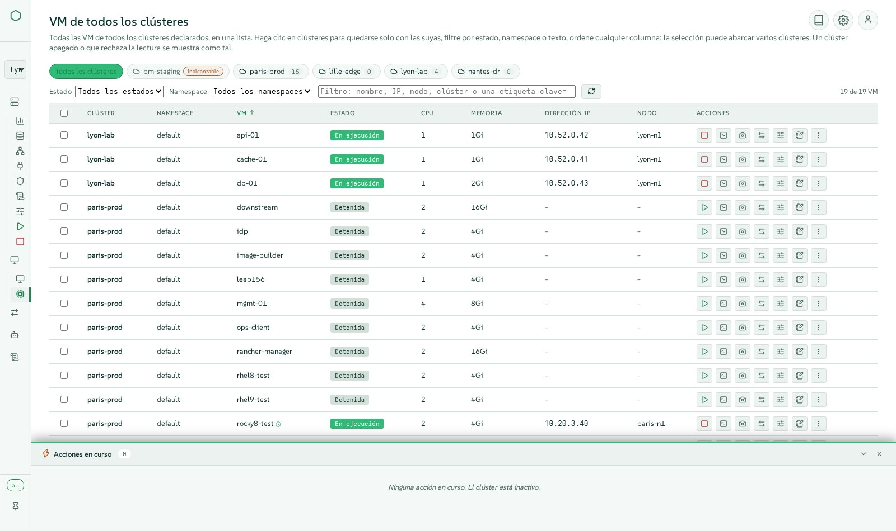
Máquinas virtuales, como en Harvester y más
Todo lo que Harvester ofrece sobre una VM, en ventanas modernas que permanecen abiertas una junto a otra.
- Crea VM con imágenes, plantillas, cloud-init, redes, discos y ubicación, verificadas contra el espacio realmente asignable.
- El menú de acciones completo: iniciar, detener, reiniciar, pausar, reinicio suave, clonar, convertir en plantilla, YAML, copias de seguridad, snapshots, eliminar junto con sus volúmenes.
- Cambios en caliente: hot-plug de CPU y memoria, CD-ROM, tarjetas de red, migración de almacenamiento, credenciales de acceso.
- Una consola VNC que varias personas pueden compartir a la vez, con un teclado compatible con AZERTY, y una consola serie.
- Snapshots, copias de seguridad, restauraciones y sus planificaciones; migración en vivo entre nodos.
- Mueve una VM a otro clúster, expórtala a un archivo, impórtala en otro lugar, con control de velocidad, tiempo restante y tasa de transferencia.
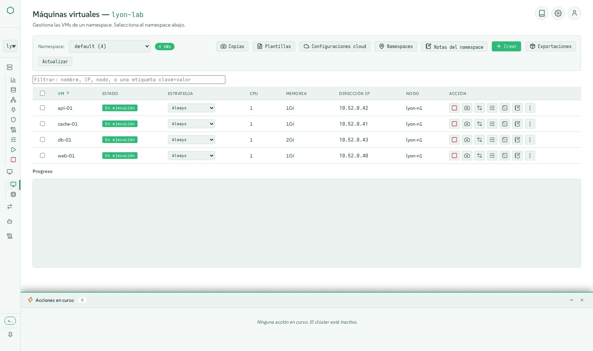
Ve el clúster tal como está construido
Vistas extraídas del clúster en vivo, un bloque por objeto, al estilo de las herramientas de VMware.
- Vista general con métricas, un mapa del clúster con nodos y VM, eventos y medidores de uso.
- Mapas de fabric, red y almacenamiento: un bloque por switch, red, volumen y disco.
- La ruta de red de una VM, desde su tarjeta hasta el puerto físico.
- Hosts como en Harvester: discos, etiquetas, huge pages, KSM, gestor de CPU, gestión fuera de banda mediante harvester-seeder, modo mantenimiento con seguimiento en vivo del drain.
- Namespaces, proyectos de Rancher, cuotas y miembros.
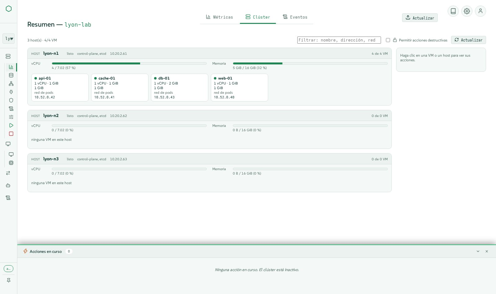
Almacenamiento en el que puedes confiar
Longhorn y las imágenes, explicados en lugar de simplemente listados.
- Volúmenes, imágenes, storage classes (incluidas las cifradas), snapshots y copias de seguridad, con crear, editar y eliminar en ventanas.
- Volúmenes degradados explicados y corregidos de forma segura: réplicas faltantes, réplicas sin ubicar, reconstrucciones en curso.
- Espacio asignable calculado tal como lo decide Longhorn, de modo que una VM nunca se planifique donde no pueda caber.
- Almacenamiento LVM y descargas de imágenes CDI donde Harvester las admite.
- Configuración del destino de copias de seguridad y paquetes de soporte.
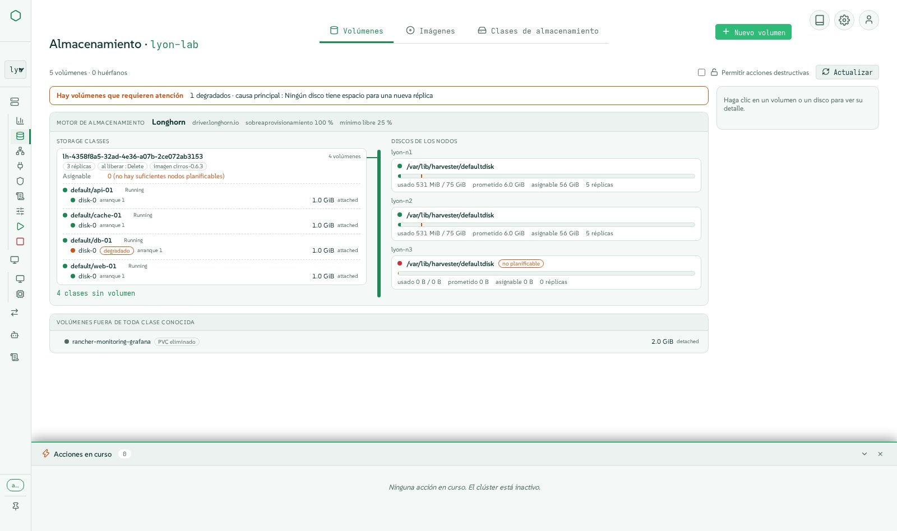
Redes, overlay y underlay
De las redes de VM a las VPC de kube-ovn, con formularios y un diagrama en vivo.
- Redes de VM, redes de clúster y sus configuraciones, balanceadores de carga y pools de IP, redes de host.
- Redes de almacenamiento, migración y RWX configuradas en un solo lugar.
- kube-ovn: VPC, subredes, puertas de enlace NAT, redes de proveedor, políticas de red, estado de salud.
- IP estáticas aplicadas de verdad en redes overlay.
- Dispositivos PCI, USB y SR-IOV pasados directamente a las VM.
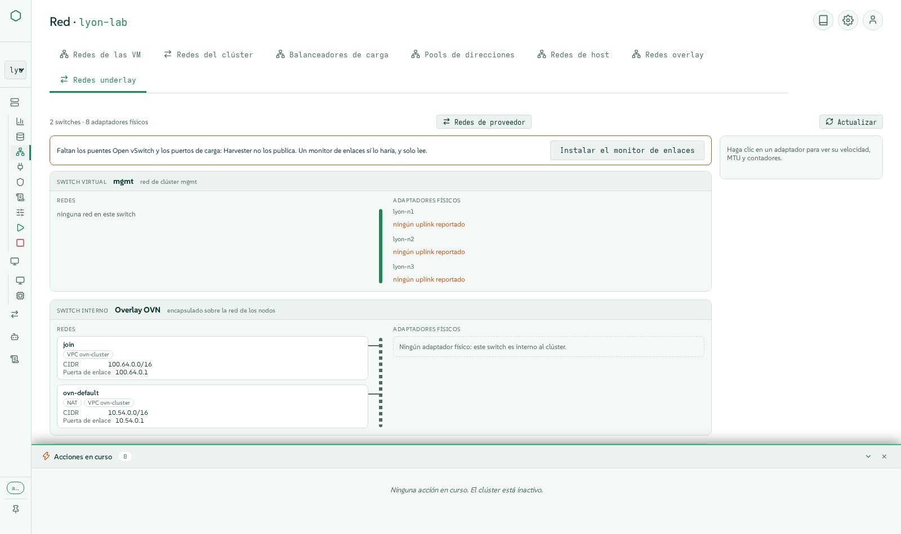
Deja VMware, en caliente y de forma visible
Decenas de VM trasladadas de vCenter a Harvester con Forklift, con el corte de servicio más breve posible.
- Forklift instalado por ti, con su imagen VDDK generada y subida a tu registro.
- Orígenes de vCenter declarados, inventario explorado, oleadas compuestas con asignaciones de red y almacenamiento.
- Migración en caliente: copias incrementales mientras la VM sigue en ejecución, seguidas de un corte programado o inmediato.
- Oleadas mostradas como bloques o como carriles en una línea de tiempo, en todos los clústeres.
- Reversión al origen, que indica cuándo VMware detiene el origen ante una pregunta, y comprobaciones que rechazan una oleada cuya dirección MAC ya está en uso.
- Importaciones de VM desde VMware, OpenStack o un archivo OVA.
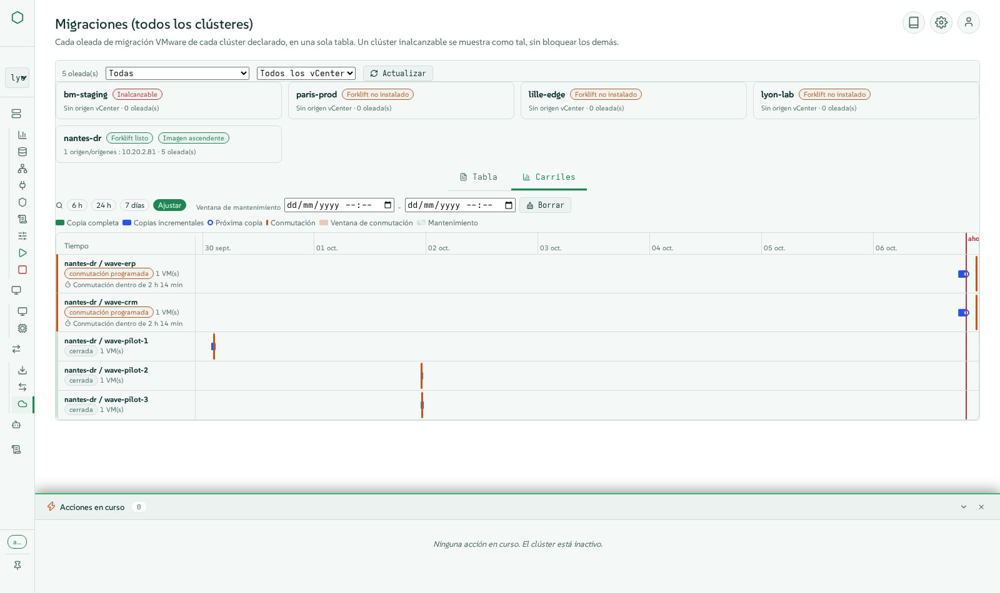
Ciclo de vida del clúster sin el estrés
Las operaciones que nadie quiere hacer a mano a las 2 de la madrugada.
- Apagado ordenado en ocho pasos secuenciales: comprobaciones previas, snapshot de etcd, snapshots de VM, detención ordenada de VM, mantenimiento de almacenamiento, cordon, workers, plano de control.
- Arranque en cinco pasos, Wake-on-LAN incluido, reiniciando solo las VM que el apagado detuvo, en sus grupos y orden.
- Grupos de VM que se detienen e inician en secuencia entre grupos y en paralelo dentro de un grupo.
- Actualizaciones de Harvester desde la interfaz, con una ISO airgap cuando no hay conexión a internet.
- Mantenimiento de nodos con el drain seguido en vivo y los bloqueos explicados.
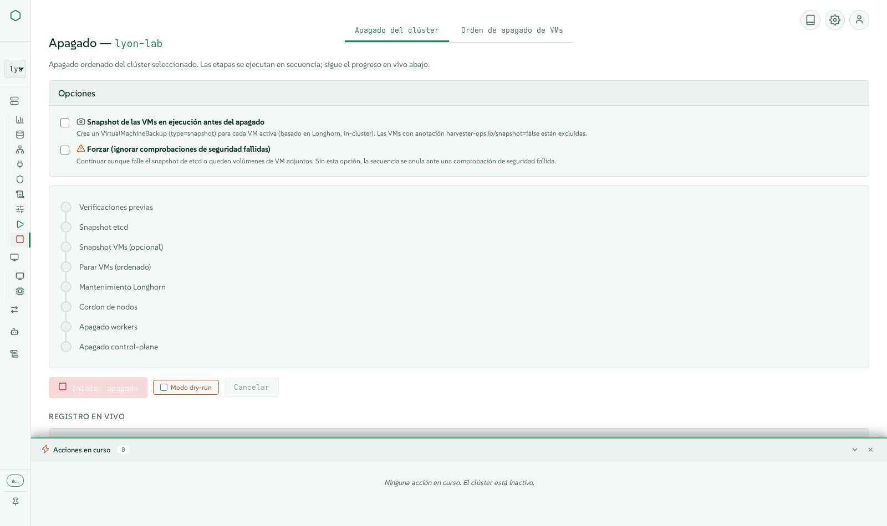
Infraestructura como código y bare metal
De servidores vacíos a clústeres de Kubernetes, desde una sola consola.
- Instalaciones bare-metal de Harvester mediante medios virtuales Redfish: descubrimiento, discos y pools, perfiles multinodo, instalaciones por lotes, el clúster se declara solo.
- Clústeres de Kubernetes (RKE2) creados en Harvester con Cluster API, con servicios balanceados mediante CAAPH y kube-vip.
- Declaraciones de Terraform conservadas por la consola, un estado cada una, el plan revisado antes de aplicar; OpenTofu y el proveedor de Harvester integrados.
- Monitorización y registro: métricas de Prometheus, reglas de alerta, flujos y salidas de logs, con las comprobaciones de configuración que Harvester deja en silencio.
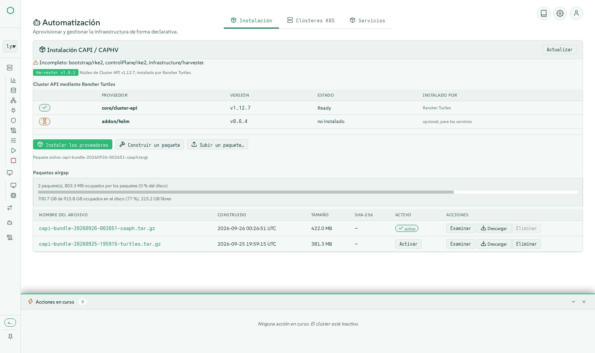
Cada acción registrada, cada evento visible
Sabe qué ocurrió, quién lo hizo y cómo terminó.
- Cada gesto es una acción registrada con pasos en vivo en el panel de acciones, y luego registros e historial en la pestaña Actividad.
- Los cambios realizados fuera de la consola (interfaz de Harvester, kubectl, Rancher) también se detectan y se listan.
- Actividad filtrada por clúster, estado y texto; un historial duradero de las últimas ejecuciones con sus registros.
- Eventos del clúster y uso en la vista general; lo que el clúster te rechazó se indica en lugar de mostrar una vista vacía.
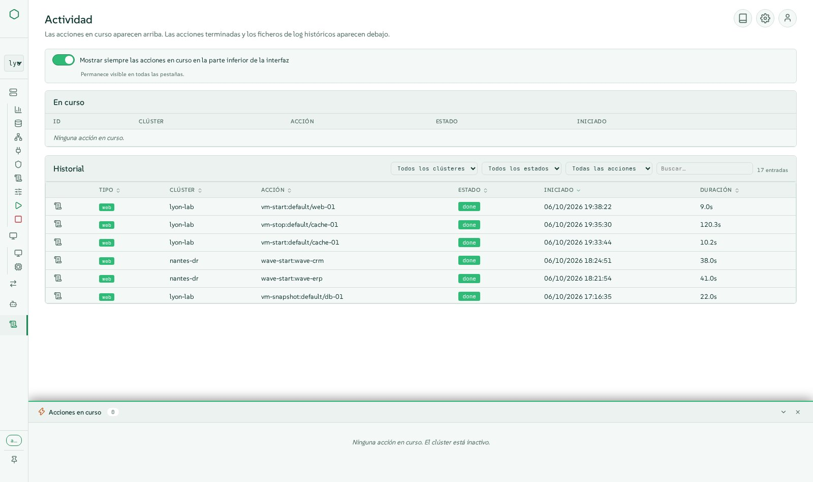
Seguro por defecto
Diseñado para equipos de producción, con mínimo privilegio en todas partes.
- El inicio de sesión es obligatorio, con cuentas y roles de la consola (lector, operador, administrador).
- Inicio de sesión único mediante Rancher: las acciones se ejecutan con los permisos propios de Rancher de cada persona, nunca con un administrador compartido.
- Identidad delegada al clúster mediante la suplantación de Kubernetes (impersonation), de modo que el RBAC del clúster se aplica a cada persona.
- Límites de tasa, entradas validadas, kubeconfigs con alcance limitado, secretos que nunca se muestran.
- Secretos y claves SSH del clúster gestionados en formularios tipados.
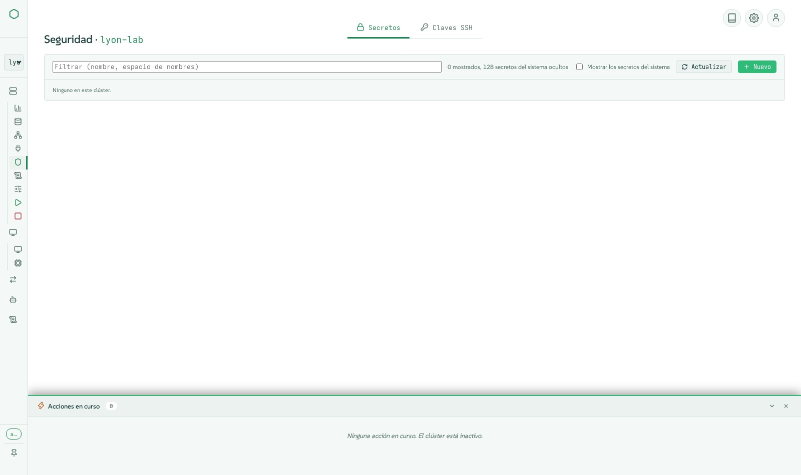
Lista para producción, incluso sin conexión
Un paquete firmado que se instala y se actualiza solo, sin internet.
- Un único tarball firmado con la imagen del contenedor, el paquete de Cluster API, OpenTofu y el proveedor de Terraform: listo para usar en un sitio airgap.
- Actualizaciones desde la interfaz, en línea o desde un archivo subido, con verificación de firma y reversión automática si la nueva versión no responde.
- Medido para flotas grandes: lecturas compartidas y procesos worker, 60 clústeres con unos cuatro núcleos de CPU.
- Cinco idiomas (inglés, francés, alemán, español, italiano), cinco temas en modo oscuro y claro, información sobre herramientas (tooltips) en todas partes, navegable con teclado.
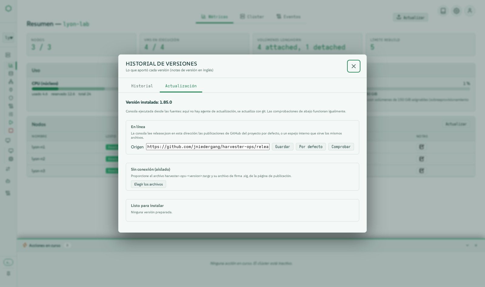
Al menos todo lo que hace la interfaz de Harvester
Cada menú de harvester-ops ofrece al menos las funciones de la interfaz de Harvester 1.9, con una experiencia moderna añadida. Con cada versión se publica una tabla de paridad función por función.
Leer la tabla de paridadBajo el capó
Una pila pequeña y auditable: sin framework de JavaScript, sin descargas de runtime, cada acción es un script que puedes ejecutar tú mismo.
Arquitectura
Navegador
Módulos de JavaScript nativo (vanilla), Server-Sent Events para los pasos en vivo, WebSockets para las consolas.
Consola
Aplicación Flask que sirve la interfaz y una API REST, con inicio de sesión, roles, límites de tasa y un motor de acciones (SQLite en modo WAL).
Scripts
Cada operación es un script bash o Python dentro de bin/, ejecutado por la consola como una acción registrada y utilizable por sí solo desde la línea de comandos.
Clústeres
Lectura directa a través de la API de Kubernetes (conexiones en pool, lecturas compartidas, procesos worker) o de kubectl; actúa con la identidad de la persona.
Principios de diseño
- La línea de comandos y la interfaz son equivalentes: la interfaz nunca omite los scripts.
- Todo gesto que modifica algo es una acción registrada, visible en vivo y conservada en el historial.
- Airgap primero: no se necesita acceso a la red en tiempo de ejecución, todo viaja en el paquete.
- Mínimo privilegio: el clúster ve a la persona, no a la consola.
- Probado de verdad en clústeres de Harvester antes de cada versión, no solo en pruebas unitarias.
Tecnologías y versiones
Leído directamente de la versión en el momento en que se generó esta página. (v1.86.0)
Entorno de ejecución
| Componente | Versión | Función |
|---|---|---|
| Python | 3.11 | lenguaje de la consola y sus herramientas |
| SUSE BCI Python image | registry.suse.com/bci/python:3.11 | base de la imagen de contenedor |
| SQLite | WAL | historial de acciones y notas, sin servidor de base de datos |
Librerías de Python
| Componente | Versión | Función |
|---|---|---|
| bcrypt | 3.2.2 | motor de hash de contraseñas |
| flask | 3.0.3 | framework web de la consola |
| flask-limiter | 4.1.1 | límites de tasa en cada endpoint que modifica |
| flask-sock | 0.7.0 | WebSockets de las consolas VNC y serie |
| itsdangerous | 2.2.0 | cookies de sesión firmadas |
| jinja2 | 3.1.6 | plantillas de páginas |
| markdown | 3.6 | renderizado de notas de versión y documentación |
| passlib | 1.7.4 | hash de contraseñas de las cuentas de la consola |
| prometheus-client | 0.25.0 | endpoint de métricas |
| pyyaml | 6.0.2 | configuración y manifiestos de Kubernetes |
| werkzeug | 3.1.8 | toolkit WSGI bajo Flask |
| y-py | 0.6.2 | edición compartida de notas |
Librerías de navegador integradas
| Componente | Versión | Función |
|---|---|---|
| Lucide icons | 1.44.0 | el conjunto de iconos monocromos |
| xterm.js | 5.5.0 | consola serie de las VM |
| noVNC | 1.7.0 | consola gráfica de las VM, compartida entre varias personas |
| Tiptap | embedded | notas de texto enriquecido |
| Yjs | 13.6.20 | notas compartidas en tiempo real |
Herramientas en la imagen
| Componente | Versión | Función |
|---|---|---|
| kubectl | v1.30.5 | cliente de Kubernetes, respaldo de las lecturas directas de la API |
| yq | v4.44.3 | procesamiento YAML en los scripts |
| OpenTofu | 1.12.6 | aplica las declaraciones de Terraform (MPL-2.0) |
| xorriso | openSUSE package | remasterización de la ISO de Harvester para bare metal |
| OpenSSH client | openSUSE package | acceso a los nodos para el apagado y el arranque |
| terraform-provider-harvester | 1.9.0 | recursos de Harvester en las declaraciones de Terraform |
Paquete de Cluster API
| Componente | Versión | Función |
|---|---|---|
| cluster-api | v1.10.4 | componente de Cluster API |
| cabp-rke2 | v0.16.1 | componente de Cluster API |
| cacp-rke2 | v0.16.1 | componente de Cluster API |
| caphv | v0.2.8 | componente de Cluster API |
| cert-manager | v1.16.2 | componente de Cluster API |
| caphv-clusterclass | v0.2.8 | componente de Cluster API |
| turtles-rke2-bootstrap | v0.25.2 | componente de Cluster API |
| turtles-rke2-control-plane | v0.25.2 | componente de Cluster API |
| turtles-caphv | v0.10.1 | componente de Cluster API |
| turtles-caaph | v0.6.4 | componente de Cluster API |
Harvester
| Componente | Versión | Función |
|---|---|---|
| Harvester HCI | v1.7.x, v1.8.x, v1.9.x | clústeres gestionados (probados en real en v1.8 y v1.9) |
| Forklift | v1.8.2 images | migraciones de VMware en caliente |
| Rancher | 2.14 | inicio de sesión único y derechos heredados (proveedor OIDC) |
Instálalo en minutos
Descarga el paquete firmado desde las releases de GitHub, verifícalo y ejecuta el instalador. Te hará las pocas preguntas necesarias, incluida la opción de usar tus propios certificados si lo deseas.
- 1Descarga la versión y su firma
- 2Verifica la suma de comprobación
- 3Ejecuta el instalador como root
- 4Abre la consola e inicia sesión
V=1.86.0
curl -LO https://github.com/jniedergang/harvester-ops/releases/download/v$V/harvester-ops-$V.tar.gz
curl -LO https://github.com/jniedergang/harvester-ops/releases/download/v$V/harvester-ops-$V.tar.gz.sha256
curl -LO https://github.com/jniedergang/harvester-ops/releases/download/v$V/harvester-ops-$V.tar.gz.sig
sha256sum -c harvester-ops-$V.tar.gz.sha256
tar xzf harvester-ops-$V.tar.gz && cd harvester-ops-$V
sudo ./install.shNecesita un host Linux con Podman y systemd, y acceso a la API de Kubernetes de tus clústeres.
Míralo en acción
Clips cortos con subtítulos, grabados en clústeres reales, en inglés y francés.
Ver los vídeos en GitHub